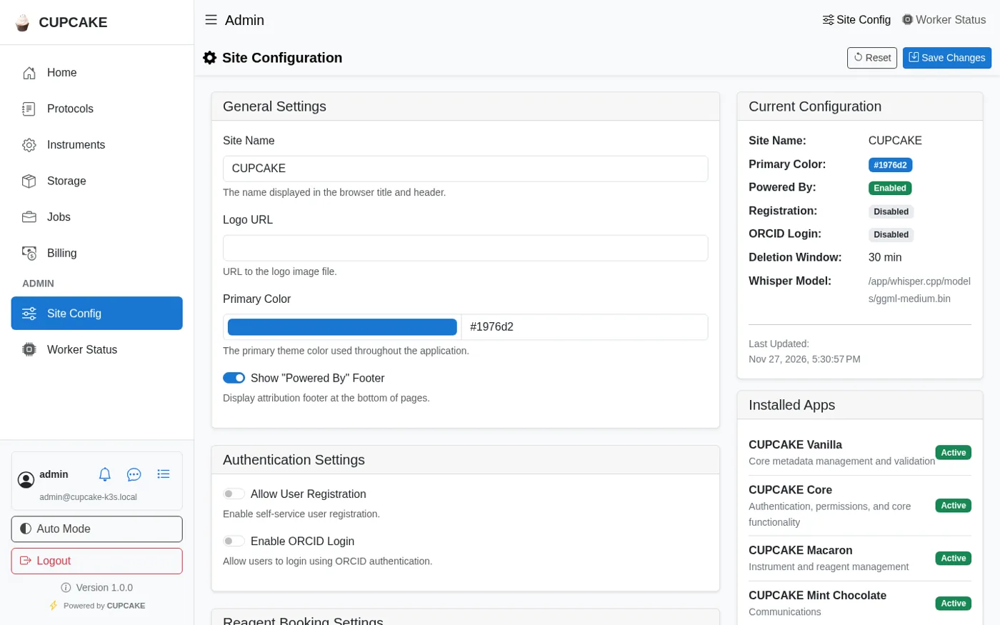
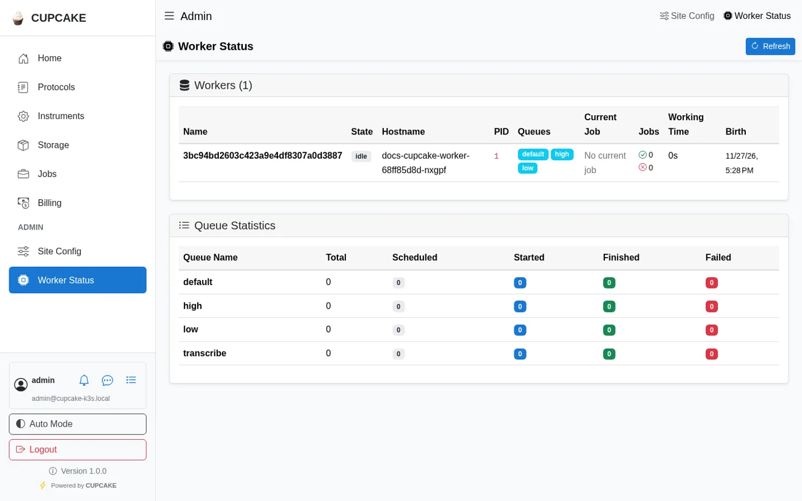
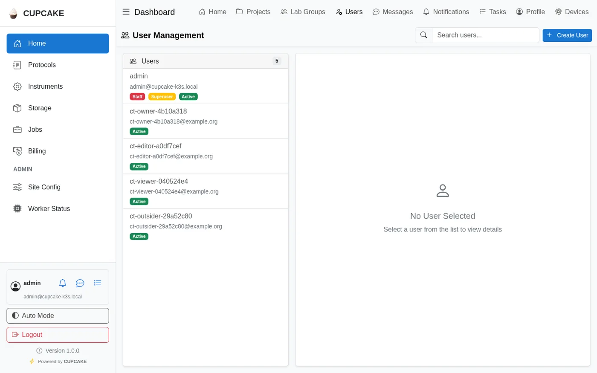

Site settings
Site Configuration sets the site's name, logo and colour, registration and ORCID sign-in, the reagent booking deletion window, and the default Whisper model for transcription. UI Feature Visibility shows or hides metadata tables, instruments, sessions, protocols, messages, notifications, storage, live sessions and billing.

Background workers
Worker Status shows the background workers, the job each is running, and the queues. Only superusers see it.

Users
User Management lists accounts and creates and edits them, with their active, staff and superuser roles.
